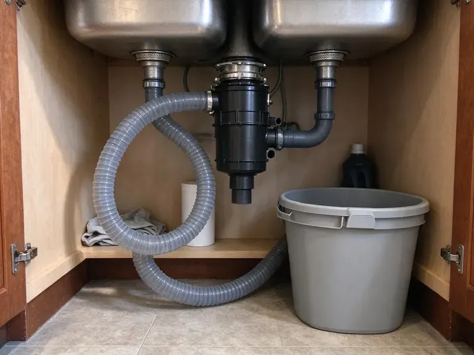

Kitchen Plumbing in Exeter, NH
From a loose trap nut to a new 36-inch farmhouse sink, FVR Plumbing does kitchen plumbing in Exeter, NH the way it should be done, tested before we leave.
- Insured, Licensed Crews
- Clean Work Area After
- Flat Price Up Front
- Labor Guaranteed
Kitchen Sink or Disposal Acting Up in Exeter, NH?
One call covers the sink, the disposal and the dishwasher drain.
Kitchen Plumbing Repairs and Installs in Exeter, NH
FVR Plumbing sends plumbers who start with the symptom you describe and work backward to the cause. A disposal that hums is usually jammed, not dead. That is a ten minute fix with a hex key when the motor is still good, and we will tell you plainly if it is not.
Our expertise includes:
- Cabling clogs in the branch line
- Air gaps, high loops and angle stops
- Dishwasher supply and drain connections

Additional Kitchen Plumbing Services in Exeter, NH
Our kitchen plumbing services in Exeter, NH cover sinks, disposals, dishwashers, and grease traps so your kitchen keeps running without backups or leaks.


Customers
Why Choose FVR Plumbing for Kitchen Plumbing in Exeter, NH?
Restaurants face grease trap inspections and backups that can close a line. We keep the paperwork straight. Every cleaning is logged with the date, the trap size and the volume pumped so you have it ready when the inspector asks.
- We Know the Local Housing, We run into the same galvanized drains and worn angle stops in Exeter homes every week.
- Kitchen Experience, Disposals, faucets and sinks are a big share of our weekly calls.
- Solid Parts, Schedule 40 traps, brass valves and braided lines go in instead of the cheap stuff.
Citywide Coverage
Our plumbers know the building types around Exeter, from older slab homes to newer subdivisions. That speeds up the diagnosis. We already know where the cleanouts tend to be and which pipe material is likely behind the wall before we open the cabinet.
Experienced Team
Our crew also works in commercial kitchens on three-compartment sinks, floor sinks, hand sinks and grease interceptors. Restaurants need it done fast. That background helps restaurant owners pass inspections, since our plumbers know what the inspector looks for on a trap and a floor sink.
Safety-First Approach
Grease trap work follows local pretreatment rules. We document each service with the date and volume, haul the waste to an approved disposal site and leave the area clean. Grease never goes down a storm drain.
Trusted Certified Exeter Plumbing Services Professionals
At FVR Plumbing, we take pride in licensed, certified plumbing services throughout Exeter, NH. Credentials matter in this trade. Every repair, install and maintenance visit follows strict safety and quality rules, and the plumbers doing the work carry recognized industry credentials.
Call Us Now PHCC Plumbing Contractor Recognition
PHCC Plumbing Contractor Recognition Better Business Bureau (BBB) Accreditation
Better Business Bureau (BBB) Accreditation Angi Certified Pro
Angi Certified Pro ISO 9001 Quality Management Certification
ISO 9001 Quality Management CertificationSinks, Disposals and Drains in Exeter, NH: How We Handle Them
Kitchen Drain Clog Removal in Exeter, NH
Water rising in the second bowl when the first drains tells us the clog is past the trap, in the branch line behind the cabinet. We run a 1/4 or 3/8 inch cable from the cleanout or the trap arm, then jet the line if the cable comes back coated in grease. Drain chemicals do little to grease. What they do is sit in the trap and weaken the glue joints.

New Disposal Installation in Exeter
Adding a disposal where there never was one means a new outlet or a switched circuit under the sink, and that part is electrical work. We handle the plumbing and can line up the electrician. Because the disposal outlet is lower than the old tailpiece, the trap usually has to come down an inch or two, and the wall stub has to allow it.
Workstation and Farmhouse Sinks in Exeter
An apron-front sink needs cabinet support built to hold it, since a 30 inch fireclay bowl can weigh over 100 pounds before water. We check the frame first. Workstation sinks with ledges and accessories often have an offset drain, so the trap and disposal have to be planned around that drain location before the counter crew arrives.
Grease Trap Repair in Exeter, NH
Rusted inlet tees, cracked lids and missing baffles all let grease pass straight through a trap. We inspect each part during cleaning and replace what has failed, usually on the same visit. Without a baffle, a trap is only a box. On big interceptors we schedule the pump-out first and then check the walls, outlet and sampling port.
InSinkErator Models We Service in Exeter
The Badger series is the entry line, with a single grind stage and a 1/3 to 3/4 horsepower motor. Evolution models add grind stages and sound insulation, which matters in an open kitchen, and some carry longer in-home warranties than the basic line does. Common models are on the truck. We also service older InSinkErator units when the motor is still sound.
InSinkErator Installation and Service in Exeter
InSinkErator units use the Quick Lock mount, which makes trading one InSinkErator for another a quick job. We install the Badger line for basic use and the Evolution series when you want more grinding stages and less noise. Older mounts get replaced. The sink flange gets fresh plumber's putty, the dishwasher knockout gets punched if needed, and the cord is checked against the outlet.
Kitchen Sink Installation in Exeter
Undermount sinks hang from clips and epoxy under the stone, so the first thing we check is how the bowl is held up. Drop-in sinks get a bead of silicone under the rim, new strainer baskets and a fresh 1-1/2 inch trap that lines up with the wall stub without any strain on the joints. Old supply lines never get reused. We fill both bowls and pull the stoppers to watch for drips.

Disposal Jams and Hums in Exeter, NH
A hum without grinding tells us the motor has power and the plate will not turn. That is often ten minutes. We free the plate from below with a hex key, clear the hopper with pliers, never a hand, and reset the overload before running water through it. No sound at all points us to the switch, the outlet or the breaker.
Kitchen Plumbing Near Me in Exeter, NH
Need a kitchen plumber close to home in Exeter? Our trucks run the area every day. A typical home job is one trip, and we take the old parts with us and dry out the cabinet before leaving.
Being close means a short drive for both routine work and emergencies around Exeter. Most visits start with a phone call. We ask what the sink is doing, how old the disposal is and whether the dishwasher is backing up, so the plumber shows up ready.
FVR Plumbing at a Glance
- Licensed and insured plumbers serving Exeter, NH
- Same-day appointments and 24/7 emergency response
- Upfront, flat-rate pricing before work begins
- 4.9-star rated by 840+ New Hampshire customers
Exeter Map
Exeter Information
- Population
- 10,109
- Area codes
- Local
- Service area
- Exeter and communities within 40 miles
- Nearby
- Portsmouth, Durham, Dover, Derry
A large share of homes rely on private wells, and some wells carry naturally occurring arsenic, radon or iron that call for treatment. Under a Exeter, NH kitchen sink, you see it as scale on the aerator and buildup in the trap long before the drain stops.
Expert Services
Reach out to FVR Plumbing for reliable plumbing work done by licensed pros in Exeter, NH.
Our Specialized Plumbing Services in Exeter, NH
At FVR Plumbing, we handle the full list of plumbing services across Exeter, NH. We go from leak detection all the way to full system installations, for homes and commercial buildings, and we do it quickly at a fair price. Explore our core services below:


What Happens When You Call About Kitchen Plumbing in Exeter, NH
Here is how we get your kitchen back to normal.
Call or Book Online
Call (844) 442-1569 or use our form. Tell us what the sink is doing and we will book a time that fits your day.
Diagnosis and Price
A licensed plumber checks the trap, stops and disposal in your Exeter home and gives you a flat price before starting.
Repair and Leak Test
After you say yes, we do the work with solid parts, fill the bowls and run the disposal, and check each joint for drips.
Frequently Asked Questions About Kitchen Plumbing in Exeter
A trap or supply line repair usually costs $125 to $300. Expect $250 to $650 for a disposal with the unit, $350 to $900 for a kitchen sink install, and about $1,500 and up for a commercial grease trap. The price is set up front.
Every one to three months is typical, depending on menu, volume and local rules. Heavy frying means more frequent service. A house with a small grease trap is usually fine with one inspection and cleaning a year, unless the family does a lot of frying.
Simple replacements usually do not. Moving a drain or installing a grease trap often does, and we take care of the permit when needed.
Moen, Delta, Kohler, American Standard and Pfister faucets are all ones we install and repair, along with InSinkErator, Waste King and Moen disposals and most other supply house brands. Common cartridges and mounts are on the truck. Store-brand faucets are trickier because their cartridges are often not sold on their own.
Keep grease, coffee grounds, rice and pasta out of the drain. Run cold water during disposal use. Cold water keeps grease solid so the disposal can chop it up and push it through instead of letting it coat the pipe walls. A basket strainer in the other bowl helps too.
Restaurants typically clean every one to three months, though a busy fryer kitchen may need it every few weeks. Most houses do not have one. A common rule is to pump it before grease and solids take up about 25 percent of the trap, and some sewer districts set the interval for you.
Swapping a faucet or clearing a clog usually does not need one. Moving a sink, adding a new drain line or changing the waste and vent piping usually does, and the rules vary by city and county. We check Exeter rules ahead of the job.
Grease, coffee grounds, pasta and rice pile up in the drain line. Scale from hard water makes the buildup grab faster. Clearing the line and changing a few disposal habits usually solves it, unless the pipe has a belly or too little fall.
What People Are Saying About Our Plumbing Experts?

Nathan E.
Our tankless heater kept throwing an error code and shutting off mid shower. The tech flushed the heat exchanger, which was full of scale, and replaced a bad flow sensor. Hot water has been steady for half a year now.
Water Heater Repair · Somersworth, NHCarlos V.
Our house still had galvanized pipe, and upstairs the shower was a trickle. The crew repiped everything in PEX over three days and patched every drywall hole before they left. The pressure difference is night and day.
Repiping · Rochester, NHTyler J.
We bought a taller comfort height toilet for my dad, who just had knee surgery. The plumber pulled the old one, found the flange was cracked, and replaced it before setting the new bowl. Took about two hours.
Toilet Installation · Rochester, NH
Marcus H.
Grease from the fryer line kept clogging the kitchen drain at my diner. FVR Plumbing hydro jetted the line after closing, showed me the buildup on camera, and set us up on a quarterly cleaning so it does not catch us on a Friday again.
Drain Cleaning · Durham, NH
Greg S.
I manage a small strip center with six tenants. FVR Plumbing handles our annual backflow testing and fixed a recurring clog in the shared sewer line that had been backing into the nail salon. Their reports come in clean and on time.
Commercial Plumbing · Portsmouth, NHRobert G.
The camera showed a full break in our clay sewer line near the street. FVR Plumbing replaced it with a trenchless pipe burst, so the only digging was two small pits in the yard. They let us watch the footage before and after.
Sewer Line Replacement · Exeter, NH